Level 2, older clients, side plank
Level 2, older clients, 50 min. Peak: Side plank
Warm up15 min
1. Footwork7 min, Reformer

Footwork: heels wide, parallel2 min, x10
Heels wide on FB, par; Knees over ankles; Even weight both feet

Footwork: wide, turned out2 min, x10
Heels wide, toes out (ER); Knees open over toes; Inner thighs zip on return

Footwork: prances2 min, x16 alternating
Legs long, toes on FB; One heel lowers, other lifts; Carriage stays still

Footwork: calf stretch under the bar1 min, 3 slow holds
Legs long, heels under FB; Hold 3 breaths, lift, repeat; Soft knees if tight
2. Bridge4 min, Reformer

Heel bridge, feet flexed on footbar1½ min, x8
Heels on FB, toes up; Lift hips, feel hamstrings; Hips level

Bridge with carriage press2½ min, x8
Lift to bridge, hold hips up; Press carr out and in; Hips stay high and level
3. Abs and supine arms4 min, Reformer

Chest press with light weights2 min, x10
Lie on carr, feet on FB; Wts at chest, press up; Lower slow, elbows wide
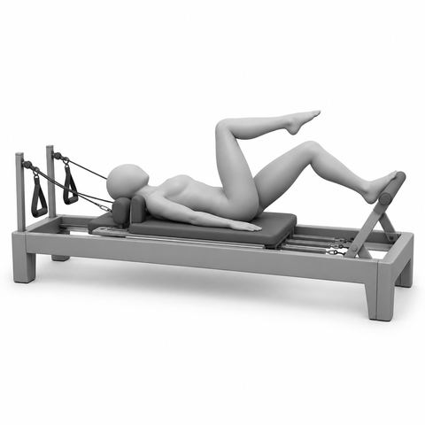
Knee folds, feet on footbar2 min, x6 ea
Arches on FB, neut; Lift one foot to TT; Pelvis still, switch
Strength and tone19 min
4. Plank3 min, Reformer

Reformer plank1 min, 3 holds of 20 sec
Hands on FB, feet on plat side; Long line, carr still; Breathe, hold, rest

Side support on the reformer2 min, x5 ea
One hand on FB, side to bar; Feet stacked on carr edge; Press carr out, lift hips
5. Lower body5 min, Reformer

Side splits2½ min, x8
One foot on plat, one on carr; Press carr out, legs wide; Squeeze to close, tall spine
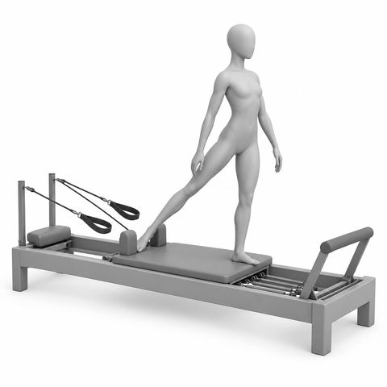
Side skating2½ min, x10 ea
Stand on plat, side to carr; One foot pushes carr sideways; Standing knee soft, hips level
6. Upper back4 min, Reformer

Seated biceps, arms wide2 min, x10
Sit facing straps, arms wide; Curl hands to shoulders; Elbows still, slow back

Kneeling biceps2 min, x10
Kneel tall facing straps; Arms at shoulder height; Curl to temples, elbows high
Second half
From minute 27. 1 equipment changes, 4 spring changes
Strength and tone, continued19 min
7. Upper front4 min, Reformer

Kneeling serve a tray2 min, x8
Kneel tall, back to straps; Palms up, press forward; Ribs down, slow return

Incline push-ups on the footbar2 min, x8
Stand, hands on FB, step back; Long line head to heels; Bend elbows, press away
8. Side body and rotation3 min, Reformer

Side-lying leg in strap1½ min, x10 ea
Lie on side, top foot in strap; Lift and lower top leg; Hips stacked, long waist

Seated rotation with one strap1½ min, x6 ea
Side sit, both hands on 1 strap; Rotate away, arms at chest; Return slow, hips still
Functional11 min
9. Full body6 min, Mat
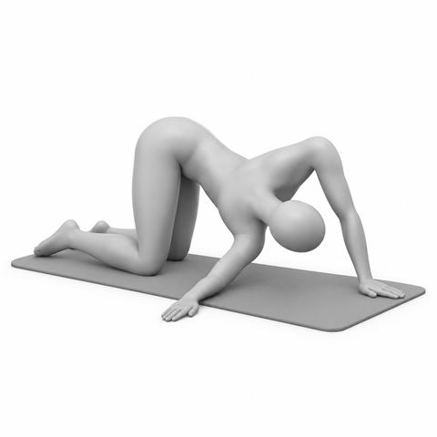
Thread the needle2 min, x4 ea
Hands and knees; Thread arm under, then open; Follow hand with eyes
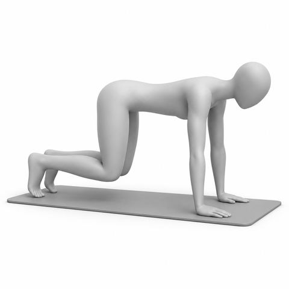
Hands and knees hover2 min, 3 holds of 10 sec
Hands under shoulders, knees under hips; Hover knees 1 inch; Back flat, breathe, rest
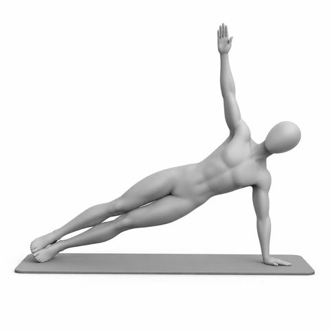
Side plank2 min, 3 holds of 20 sec ea
Hand or forearm down, legs long; Lift hips, top arm up; Hold, lower, switch
10. Back extension5 min, Mat
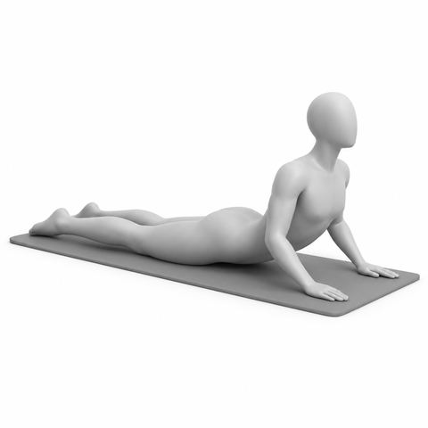
Swan prep2 min, x6
Lie face down, hands by shoulders; Lift chest a little; Long neck, lower slow
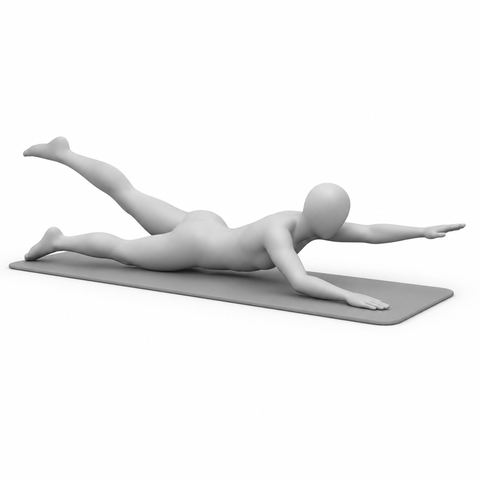
Swimming1 min, 20 counts
Lie face down, arms long; Lift opposite arm and leg; Flutter, long neck
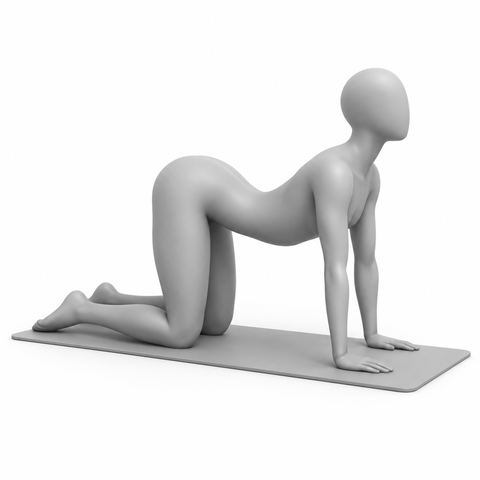
Cat and cow2 min, x5
Hands and knees; Round up, then lengthen; Move with breath
Lengthening5 min
11. Stretch5 min, Mat
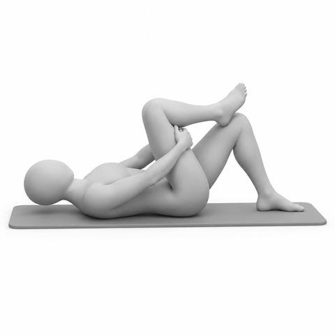
Figure 4 stretch on the mat1½ min, 3 breaths ea
Lie on back, knees bent; Ankle over knee; Draw in gently, switch
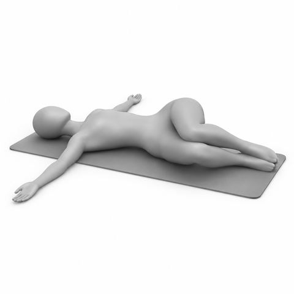
Hip rolls1½ min, x4 ea
Knees bent, feet together; Knees drop to one side; Exh to center, switch
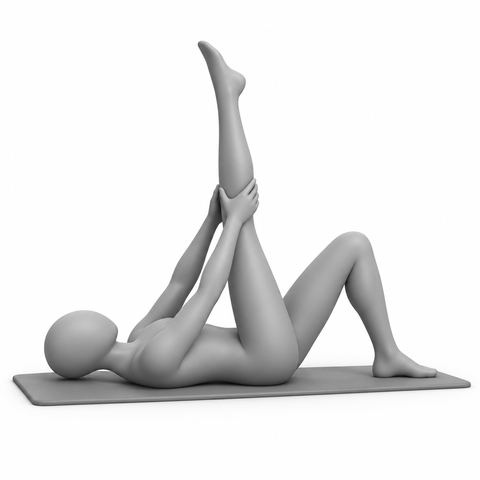
Supine hamstring stretch2 min, 3 breaths ea
Lie on back, one leg up; Hands behind thigh; Soft knee, switch
Key. TT Tabletop, legs at 90 degrees; FB Footbar; carr Carriage; plat Platform; par Parallel legs; ER External rotation, turned out; neut Neutral pelvis and spine; ea Each side; x Repetitions, so x8 means 8 times; Exh Exhale; sec Seconds. Springs: red heavy, blue medium, yellow light. Older clients start lighter. Start at the lighter load. Add spring only if form stays clean.